Quick start
From an empty workspace to a running show in five minutes. You'll add some sound, a light change and a video, link them, and run them with GO.
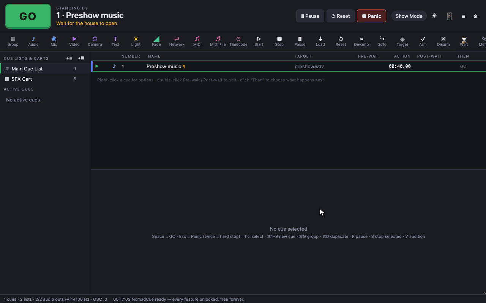
1. Install and open NomadCue
Download the installer for your system from the download page and open it. The first launch needs one extra confirmation because the builds aren't code-signed yet (see Troubleshooting). NomadCue opens with an empty workspace called Main Cue List.
2. Add some cues
- Drag sound or video files from Finder, Explorer or your file manager onto the window. Each file becomes a cue, in the order you dropped them.
- Click a toolbar button to add any other kind of cue. Try Light or Memo.
- Every new cue gets the next number. Click its name in the list, or use the Inspector at the bottom, to rename it.
3. Decide what happens next
By default every cue waits for you to press GO. To make cues fire together or one after another, click the Then column of a cue and pick:
- Wait for GO: stop here until the next GO.
- Start next with this: the next cue starts at the same time (or after the post-wait).
- Start next when done: the next cue starts when this one finishes.
The Transitions page explains these in detail.
4. Run it
Press Space or click the big green GO button. The cue under the playhead (the ▶ in the left column, also shown as Standing by at the top) starts, and the playhead moves to the next cue. Running cues appear under Active Cues on the left with their time remaining.
If anything goes wrong, press Esc to fade everything out. Press it twice to stop instantly.
5. Save
Press ⌘S (Ctrl+S on Windows and Linux). Workspaces are saved as .nomadcue files. Every save also keeps a timestamped backup next to the file. See Saving, backups and moving shows.
The main window
Everything you need while running a show is on one screen. Here's what each part does.
Top bar
| Control | What it does |
|---|---|
| GO | Starts the cue under the playhead and moves the playhead on. Same as Space. Greyed out at the end of the list. |
| Standing by | The number and name of the next cue GO will start, plus its notes in orange (useful for reminders like "wait for the house to open"). |
| Pause | Pauses everything that's running, including waits. Click again to resume. Shortcut P pauses the selected cue. |
| Reset | Stops everything and returns the playhead to the top of the list. |
| Panic | Fades everything out. Click twice to stop instantly. Same as Esc. |
| Show Mode | Locks editing so nothing can be changed by accident during a performance. See Show Mode. |
| ☀ | Opens the Light Dashboard. |
| 📱 | Shows whether the phone remote is on. Hover it to see the address to open on your phone. |
| ≡ | Opens the log: every cue fired, OSC message received and error. |
| ⚙ | Opens Workspace Settings. |
Toolbar
One button per cue type: Group, Audio, Mic, Video, Camera, Text, Light, Fade, Network, MIDI, MIDI File, Timecode, Start, Stop, Pause, Load, Reset, Devamp, GoTo, Target, Arm, Disarm, Wait, Memo and Script. Click one to add that cue after the selected cue. All 25 cue types explains each one.
Sidebar
- Cue Lists & Carts: every list in the workspace with its number of cues. +☰ adds a cue list and +▦ adds a cart. Double-click a name to rename it.
- Active Cues: every running cue with a progress bar, elapsed and remaining time, and its own pause and stop buttons.
Cue list columns
| Column | Meaning |
|---|---|
| ▶ | The playhead. Click in this column to move the playhead to that cue without selecting it. |
| Status | ● running, ❙❙ paused, ◌ waiting in a pre-wait, ⚠ broken (missing file or target). |
| Type | The cue type's icon. |
| Number | The cue number used by GO, OSC, MIDI and scripts. Numbers can contain dots and letters, like 4.1 or S2. |
| Name | The cue's name. Groups have a ▾ to fold them. ¶ means the cue has notes, and a key badge shows its hotkey. |
| Target | The file a media cue plays, or the cue a fade, stop or other control cue acts on. |
| Pre-wait | Delay before the cue starts. Double-click to edit. |
| Action | How long the cue runs. ∞ means until stopped (looping sound, held image, camera). |
| Post-wait | Delay before the next cue starts automatically. Double-click to edit. |
| Then | What happens after this cue: GO (wait for GO), ↓ with this or ↓ when done. Click to change. |
Cues joined by "with this" or "when done" are connected by a blue line on the left, so you can see sequences at a glance. A thin bar under a running cue shows its progress.
Inspector
The panel under the cue list edits the selected cue. Its tabs depend on the cue type. Every cue has Basics (number, name, timing and transition, colour, armed, flagged, notes) and Triggers (hotkey, MIDI trigger, re-trigger behaviour). Select several cues to edit them all at once; fields that differ show (multiple).
Status bar
Along the bottom: number of cues and lists, audio outputs and sample rate, the OSC port, the latest log line, and small output meters. Click the meters to open the large Audio Output Meters window.
Adding cues
There are five ways to add a cue. New cues go after the selected cue, or at the end if nothing is selected.
1. Drag and drop files
Drag files from your computer anywhere onto the window. The list shows "Drop media to create cues" while you're dragging.
| You drop | You get |
|---|---|
| Sound | An Audio cue. Supported: WAV, AIFF, MP3, FLAC, OGG, M4A, AAC, Opus. |
| Video or image | A Video cue. Supported: MP4, M4V, MOV, WebM, MKV, PNG, JPEG, GIF, WebP, SVG. |
| MIDI file | A MIDI File cue (.mid, .midi). |
A .nomadcue file | Opens that workspace. |
Drop onto a specific cue to place the new cues before or after it, or onto the middle of a group to put them inside. Drop onto a cart to add pads.
2. The toolbar
Click any cue type in the toolbar. Audio, Video and MIDI File open a file picker so you can choose one or more files.
3. Keyboard shortcuts
⌘1 Audio · ⌘2 Mic · ⌘3 Video · ⌘4 Camera · ⌘5 Text · ⌘6 Light · ⌘7 Fade · ⌘8 Network · ⌘9 MIDI · ⌘0 Group.
4. Right-click
Right-click a cue and choose Add cue after, or right-click empty space in the list to add a cue at the end. Inside a group, choose Add cue inside this group.
5. Inside a group
Hover a group and click + add inside to pick a cue type that goes straight into the group.
After adding
- Press Enter to rename the selected cue, or double-click its name or number.
- Drag cues to reorder them. Drop on the top or bottom half of a row to go before or after it, or on the middle of a group to go inside.
- ⌘D duplicates, ⌘C/⌘X/⌘V copy, cut and paste, ⌥↑/⌥↓ move the cue up or down.
- Edit → Renumber Selected Cues renumbers a selection in order.
GO and the playhead
The playhead marks the next cue. GO starts it and moves the playhead on, so you can run a whole show by pressing one key.
Pressing GO
- Press Space or click GO.
- Space works even after you've clicked a button or dropdown. It only types a space while you're in a text field. Press Esc to leave a text field.
- When the cue is linked to the next with Start next with this or Start next when done, the whole sequence runs and the playhead jumps past it to the next cue that waits for GO.
- At the end of the list, Standing by shows — end of list — and GO is disabled.
Moving the playhead
- Click a cue (even one inside a group) to select it and put the playhead there.
- Click the ▶ column to move the playhead without changing the selection.
- ↑/↓ move the selection, and the playhead follows. In Show Mode they move the playhead directly.
- Right-click a cue and choose Set playhead here.
- A GoTo cue moves the playhead when it runs, which is useful for jumping to a different scene.
Starting a cue without moving the playhead
- Press V to audition the selected cue, or right-click it and choose Play now.
- Give a cue a hotkey in its Triggers tab, or fire it from the phone remote, OSC or MIDI.
- S stops the selected cue and P pauses it.
Several cue lists
A workspace can have many cue lists, for example one per act, or one for sound and one for lights. GO runs the list you're viewing. Click a list in the sidebar to switch to it. Move cues between lists with drag and drop, or right-click → Move to list.
Re-triggering a cue that's already running
In the cue's Triggers tab, When re-triggered while running decides what a second GO, hotkey or click does:
| Option | Behaviour |
|---|---|
| Ignore | Nothing happens. This is the default. |
| Restart | The cue starts again from the beginning. |
| Stop | The cue stops. Handy for toggling a sound on and off from a cart. |
| Pause / resume | The cue pauses, and the next trigger resumes it. |
Panic, pause and reset
Three controls for when you need to stop or hold the show.
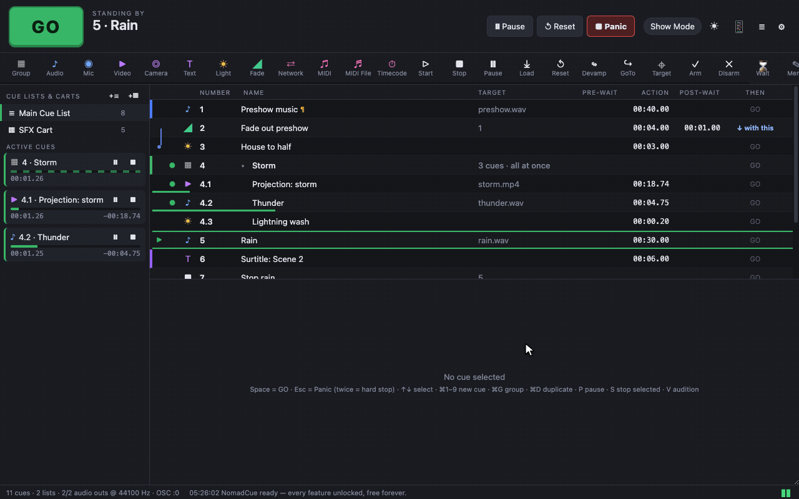
Panic
- Press Esc or click Panic to fade out every running cue: sound, video and lights. The fade takes 1 second by default. Change it in Settings → General → Panic fade time.
- Press Esc again during the fade to stop everything instantly (a hard stop).
- Show → Hard Stop All stops instantly without fading.
- The playhead stays where it is, so you can carry on with GO afterwards.
Pause and resume
- Pause in the top bar pauses every running cue. Pre-waits and post-waits freeze too, so linked sequences stay in time. Click it again to resume.
- Each cue in Active Cues has its own pause and stop buttons.
- P pauses or resumes the selected cue.
Reset
Reset stops everything and puts the playhead back at the top of the list, ready for the next performance. Any changes made by Target cues during the show are not undone by Reset; use a Reset cue for that (see cue types).
/panic) or the phone remote.Show Mode and safety
NomadCue has several features that protect a performance from slips and crashes.
Show Mode
Click Show Mode in the top bar or press ⌘⇧M. While it's on:
- Keyboard editing is switched off: ⌫ delete, Enter rename, ⌘G, ⌘1–⌘0, ⌥↑/⌥↓, cut and paste.
- Double-clicking a cue's number, name or wait no longer edits it.
- S (stop selected) and V (audition) are off, so a stray key can't stop or start a cue.
- ↑/↓ move the playhead directly.
- Clicking a cue selects it without moving the playhead, so a stray click can't change what GO does next.
Turn it off again the same way when you need to edit.
Double-GO protection
GO presses closer together than 0.2 seconds are ignored, so a bounced key or nervous double-tap doesn't skip a cue. Change it in Settings → General → Double-GO protection (0 turns it off).
Backups and autosave
- Every save writes a timestamped copy into a NomadCue Backups folder next to the workspace. The 20 most recent are kept.
- Once a workspace has been saved, NomadCue also backs up unsaved changes every 2 minutes. Change the interval in Settings → General (0 turns it off).
- Closing the app with unsaved changes asks for confirmation.
Arming and flags
- Disarm a cue (untick Armed in Basics, or right-click → Armed) and it's skipped when it would run. Disarmed cues are dimmed. Use this to keep an optional effect in the list without it firing.
- Flag a cue to mark it for attention, for example something to fix at the next rehearsal. Flagged cues show ⚑ next to their number.
- Arm and Disarm cues change this during the show.
Warnings in the list
- ⚠ in the status column: the cue's file is missing or its target cue no longer exists.
- ⚠ in the Then column: the cue is set to Start next when done but never finishes on its own (a looping sound, a held image, a camera…). GO moves on to the next cue instead. Hover the ⚠ for the reason.
Carts (sound pads)
A cart is a grid of pads you can fire in any order: perfect for sound effects, stings and walk-in music that don't follow a fixed sequence.
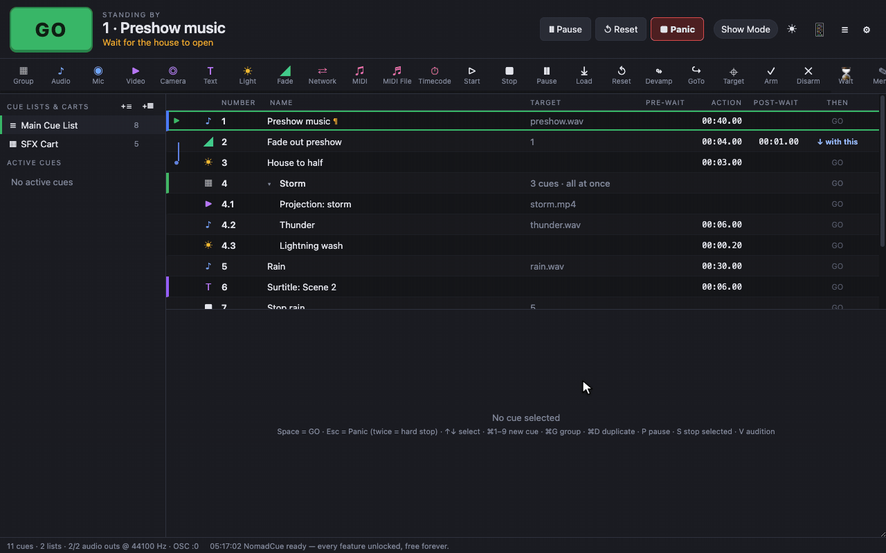
Making a cart
- Click +▦ next to Cue Lists & Carts in the sidebar.
- Drop sound files onto the empty grid, or add cues with the toolbar. Any cue type works on a cart.
- Click the cart's name in the sidebar to rename it.
Using it
- Click a pad to fire it. A progress bar runs along the bottom while it plays, and it appears in Active Cues.
- Hotkeys: give a pad a single-key hotkey in its Triggers tab (shown on the pad). The key fires the pad from anywhere in the workspace, even while you're viewing the main cue list.
- Click ✎ on a pad to select it and edit it in the Inspector without firing it.
- Set When re-triggered while running to Stop to make a pad toggle on and off, or Restart to make it play from the top every time.
- Give pads colours (right-click → colour swatches) to find them quickly.
Phone remote
Run the show from any phone, tablet or laptop on the same network, with nothing to install. Handy for focusing lights from the stage or running a rehearsal from the auditorium.
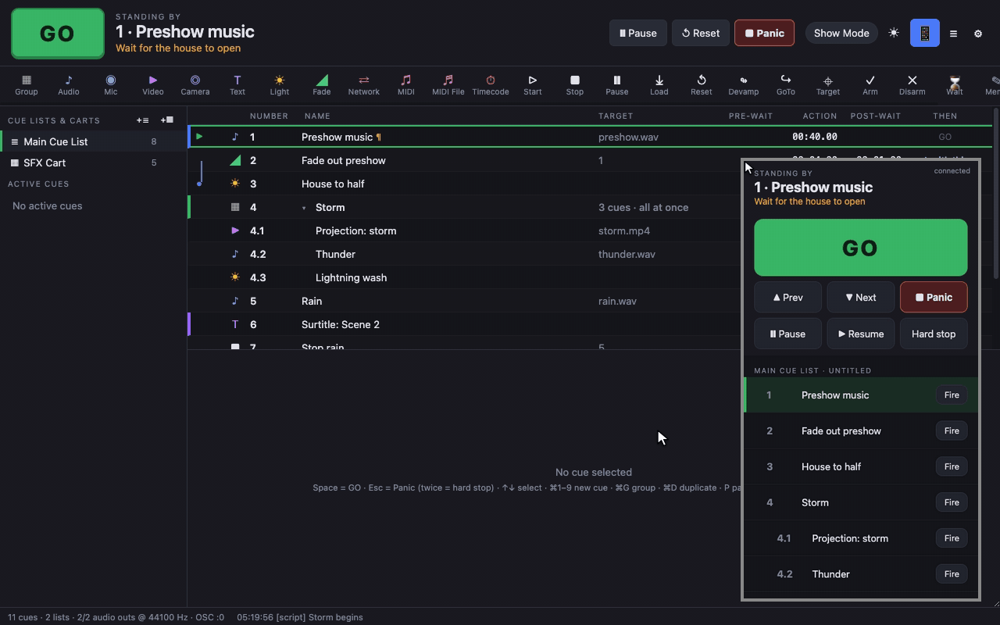
Turning it on
- Open Settings → Remote and tick Enable web remote.
- The port is 53100 by default. Change it if something else uses that port.
- Optionally set a passcode. The remote asks for it before connecting.
- The settings page lists the addresses to open, such as
http://192.168.1.12:53100/. Hovering the 📱 button in the top bar shows them too. - On your phone, connect to the same Wi-Fi network and open that address in the browser.
What the remote can do
- Standing by shows the next cue and its notes.
- GO, ▲ Prev and ▼ Next (move the playhead), Panic, Pause, Resume and Hard stop.
- Running cues with live elapsed and total time, each with a Stop button.
- The cue list: tap a name to move the playhead there, or Fire to start that cue straight away.
localhost.Transitions
Every cue has a Then setting that decides what happens to the next cue. This is how you build sequences that run on one GO.
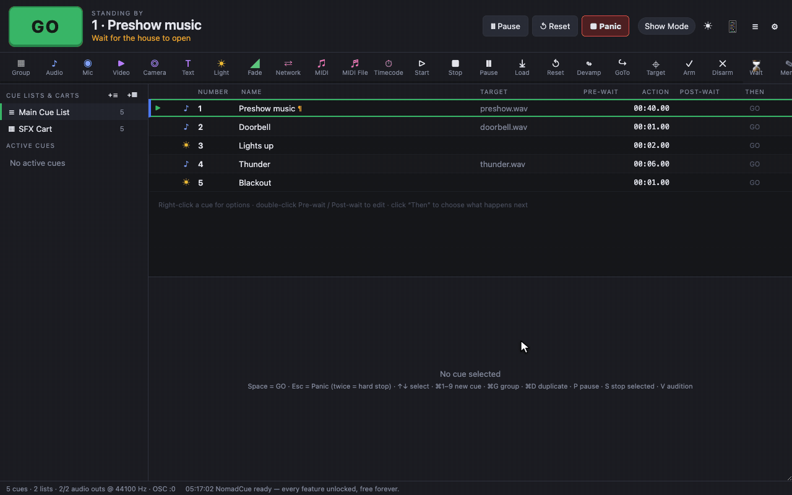
The three transitions
| Then | Shown as | What happens |
|---|---|---|
| Wait for GO | GO | The next cue waits until you press GO. This is the default. |
| Start next with this | ↓ with this | Also called auto-continue. The next cue starts after this cue's post-wait, counted from when this cue starts. With a post-wait of 0 they start together. |
| Start next when done | ↓ when done | Also called auto-follow. The next cue starts when this cue finishes. |
Three ways to set it
- Click the Then column of a cue.
- Right-click the cue → Then: ….
- In the Inspector's Basics tab, click one of the three cards under Timing & transition to the next cue.
Reading the timeline
Below the cards, the Inspector draws a small timeline and explains the result in plain English, for example:
GO starts "2 · Doorbell" immediately. When it finishes, "3 · Lights up" starts automatically.Use it to check a sequence before rehearsal.
Examples
- Sound and light together: set the sound cue to Start next with this with post-wait 0. One GO starts both.
- A thunderclap 2 seconds after the lightning: lightning cue → Start next with this, post-wait 2 s.
- A playlist: set each song to Start next when done. The last song is set to Wait for GO.
Pre-wait and post-wait
Waits add timing to a cue without needing an extra Wait cue.
| Wait | What it does |
|---|---|
| Pre-wait | A delay between the trigger and the cue actually starting. The status column shows ◌ while a cue is waiting. |
| Post-wait | Only used with Start next with this: the time from when this cue starts until the next cue starts. |
Editing waits
- In the list: double-click the Pre-wait or Post-wait cell, type the time and press Enter (or Esc to cancel). An empty cell shows — when you hover it.
- In the Inspector: the Basics tab has Pre-wait and Post-wait fields.
- From the menu: right-click → Pre-wait or Then → Post-wait for presets.
Times can be typed as seconds (2, 1.5) or as mm:ss.ss (01:30.00).
Fades and crossfades
Fade cues change a running cue smoothly over time: level, output levels, speed, video opacity, position and more.
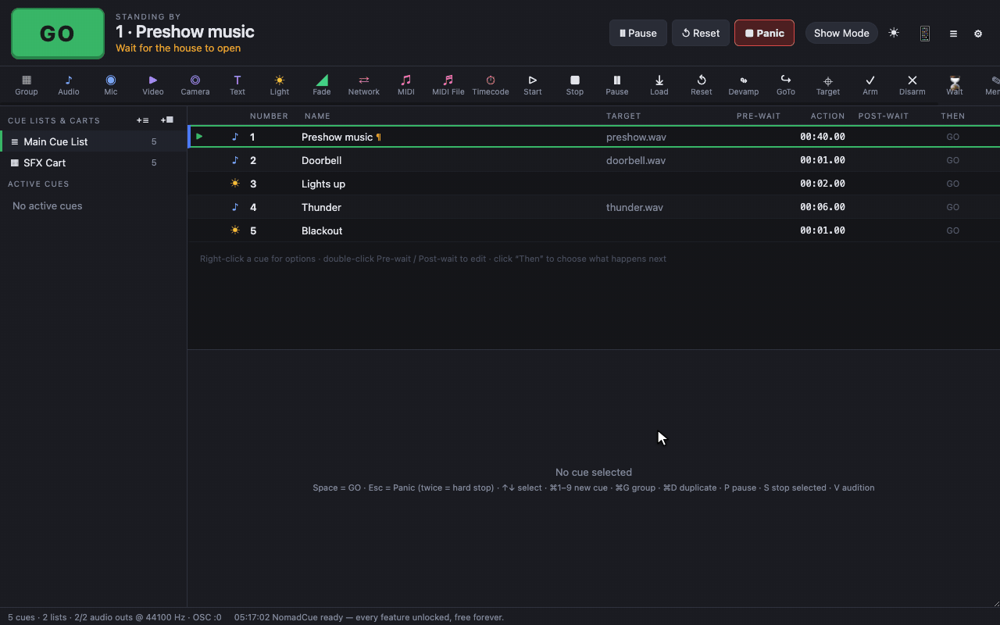
One-click fades
Right-click an audio, video, text, camera or mic cue → Fades:
- Add fade-out after (3 s) or Add fade-out after… (choose the time): inserts a Fade cue that fades this cue out and stops it.
- Crossfade into next cue (3 s) or …: inserts a Fade cue linked so that one GO fades this cue out while the next cue starts. The next cue must be an audio, video, camera, text or mic cue.
- Fade in: makes the cue itself fade in when it starts (none, 0.5, 1, 2, 3 or 5 s).
Fade cues in detail
Add a Fade cue from the toolbar, then set its target and what it fades in the Fade tab:
| Field | Meaning |
|---|---|
| Target cue | The cue to fade. It must be running when the fade starts. |
| Duration | How long the fade takes. |
| Curve | S-curve (default, natural for most fades), Linear, Equal power (best for crossfades), Exponential, Logarithmic. |
| Stop target when done | Stops the target at the end, which you want for fade-outs. |
| Fade master level | Fades an audio cue's overall level to the value in dB. -60 dB is silent. |
| Fade output levels | Fades individual outputs, for example to move a sound from the left to the right speakers. Leave an output empty to leave it unchanged. |
| Fade playback rate | Changes speed and pitch smoothly (1 = normal). |
| Fade opacity | For video, image, text and camera cues. 0 is invisible. |
| Fade geometry | Moves, scales or rotates a video cue to new X, Y, Scale % and Rotation. |
| Fade video volume | Fades the sound of a video file. |
You can tick several boxes in one Fade cue, for example fading a video's opacity and volume together.
Groups
A group holds other cues. It keeps long lists tidy and decides how its cues start: all together, in sequence, one per GO, or at random.
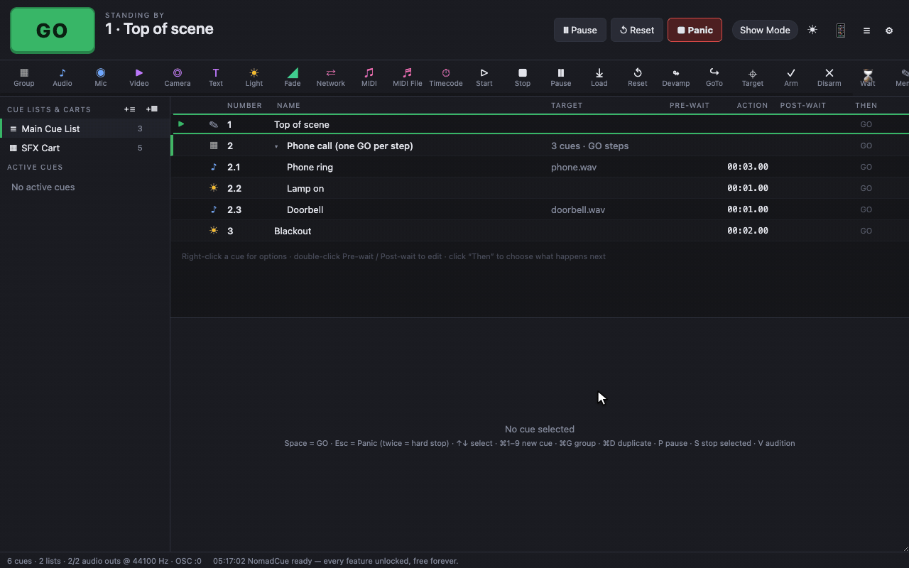
Making a group
- Select some cues and press ⌘G (or right-click → Move into group → New group from selection).
- Or add an empty Group cue from the toolbar (⌘0) and drag cues onto the middle of it, or use its + add inside button.
- Click ▾ to fold a group. Right-click a cue inside → Move out of group to take it out.
Group modes
Set the mode in the group's Group tab, or right-click → Group mode:
| Mode | What GO does | Good for |
|---|---|---|
| Step through | Each GO starts the next child, one at a time. After the last child, the playhead moves past the group. | A scene with several cues you want to keep together but run separately. |
| Start first child | Starts the first child. The others follow their own transitions. | A sequence that's linked inside the group. |
| Start all | Starts every child at the same moment. | Sound, video and light that always go together. |
| Random | Starts one child at random. | Varied doorbells, crowd reactions, installations. |
The Target column shows the mode, for example 3 cues · all at once. A group counts as running while any of its children run, and stopping it stops them all.
All 25 cue types
What each cue does and where to find its settings. Every cue also has the Basics and Triggers tabs described in The main window.
Media
| Cue | What it does | Details |
|---|---|---|
| ♪ Audio | Plays a sound file with level, routing, fades, loops and effects. | Audio |
| ◉ Mic | Routes a live input (microphone, line in) to the outputs, with effects. | Audio |
| ▶ Video | Plays a video or shows an image on a stage. | Video |
| ◎ Camera | Shows a live camera on a stage. | Video |
| T Text | Shows text (titles, surtitles, captions) on a stage. | Video |
| ☀ Light | Fades lights to a look written in the lighting command language. | Lighting |
| ◢ Fade | Fades a running cue's level, opacity, position, rate or volume. | Fades |
Control
| Cue | What it does | Details |
|---|---|---|
| ⇄ Network | Sends OSC or plain-text UDP messages to other devices. | OSC and UDP |
| ♫ MIDI | Sends a MIDI note, control change, program change, pitch bend, MIDI Show Control or SysEx message. | MIDI |
| ♬ MIDI File | Plays a standard MIDI file to a MIDI output. | MIDI |
| ⏱ Timecode | Sends MIDI timecode (MTC) for a set duration from a start time. | MIDI |
| {} Script | Runs JavaScript that can control cues, lights and the network. | Scripts |
Logic: cues that act on other cues
These have a Target cue field in their tab. Choose the cue they act on from the list.
| Cue | What it does to the target |
|---|---|
| ▷ Start | Starts it, as if it had been triggered. |
| ■ Stop | Stops it, with an optional fade time. |
| ❙❙ Pause | Pauses it. |
| ⤓ Load | Preloads an audio file so it starts instantly later. |
| ↺ Reset | Stops it and undoes any change a Target cue made to it. |
| ↬ Devamp | Ends a looping cue's loop so it plays to its end. Optionally starts the cue after the target when it finishes. Perfect for vamps under dialogue. |
| ↪ GoTo | Moves the playhead to the target, without starting it. |
| ⌖ Target | Changes the target's file (for media cues) or target cue (for control cues) to a new one. Lets one cue play different files on different nights. |
| ✓ Arm | Arms the target so it runs. |
| ✕ Disarm | Disarms the target so it's skipped. |
Structure
| Cue | What it does |
|---|---|
| ▦ Group | Holds other cues. See Groups. |
| ⌛ Wait | Does nothing for its duration. Useful in a sequence linked with Start next when done. |
| ✎ Memo | Does nothing. A note in the list: "Interval", "Wait for applause", "Check radio mics". |
Audio and mic cues
Audio cues play sound files. Mic cues route a live input. Both have per-output levels, a full routing matrix and a built-in effects chain.
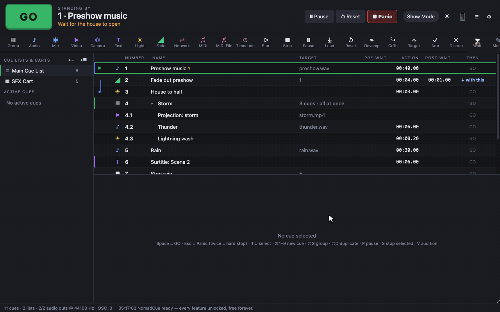
Time & Loops tab
| Field | Meaning |
|---|---|
| Waveform | A picture of the sound. The marked region is the part that plays. |
| File | The sound file. Click to choose another. ▶ Audition plays the cue. |
| Start time / End time | Play only part of the file (a slice). End time 0 means the end of the file. |
| Plays | How many times the slice plays. 0 loops forever until stopped or devamped. |
| Rate | Playback speed. 1 is normal, 0.5 half speed, 2 double. Pitch changes with speed. |
| Fade in / Fade out at end | Built-in fades at the start and end, in seconds. |
Levels tab
- Cue level (master): overall level in dB. 0 is the file's own level and -60 is silent.
- Output levels (dB): one level per output of your audio interface, so you can send a sound to specific speakers.
- Crosspoint matrix: a grid of file channels (rows) against outputs (columns). Each cell is a level in dB; empty means not connected. Double-click a cell to switch between 0 dB and off. Reset to default goes back to the standard routing.
The number of outputs comes from Settings → Audio, and is as many as your interface provides.
Audio Effects tab
Each effect has its own on/off switch, so you only use what you need:
| Effect | Controls |
|---|---|
| Filters | High-pass frequency (cut rumble, default 80 Hz) and low-pass frequency (soften, default 12 kHz). |
| 3-band EQ | Low (200 Hz) gain, Mid frequency, gain and Q, High (4 kHz) gain. |
| Compressor | Threshold, Ratio, Attack, Release. |
| Delay | Time, Feedback, Mix. |
| Reverb | Size, Mix. |
Mic cues
A Mic cue has an Input tab (input device and number of input channels) plus the same Levels and Audio Effects tabs. It runs until stopped. The first time, your system asks for permission to use the microphone.
Monitoring
- The small meters at the bottom-right show the outputs. Click them, or choose Window → Audio Output Meters, for large meters.
- Output names, levels and mutes are in Settings → Audio.
Video, images and text
Video, Camera and Text cues all appear on a stage: an output window you can put on any screen or projector.
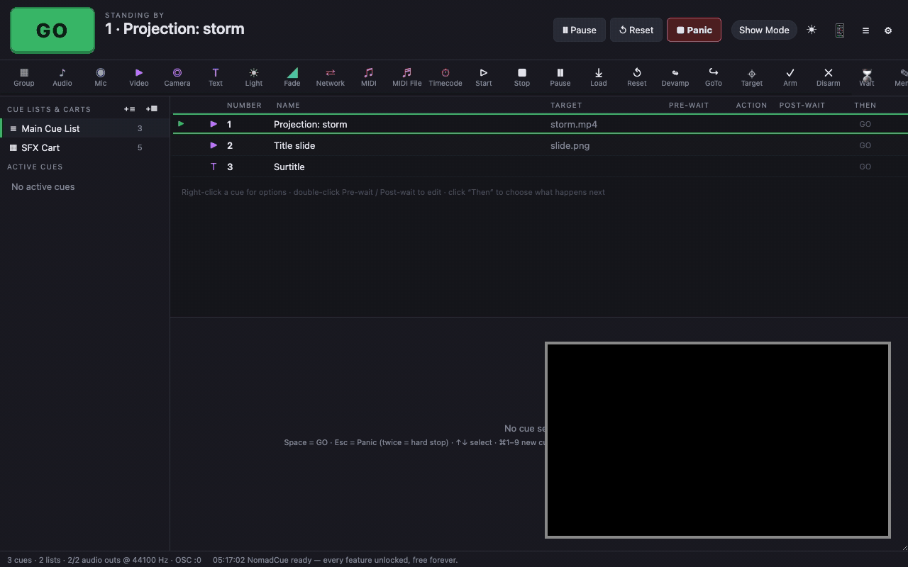
Video cues
Drop a video or image file onto the window, or click Video in the toolbar. The Media tab has:
| Field | Meaning |
|---|---|
| File (video or image) | MP4, MOV, WebM, MKV, M4V, or an image: PNG, JPEG, GIF, WebP, SVG. |
| Start time / End time | Play part of the video. End time 0 means the end. |
| Plays | Number of times to play. 0 loops forever. |
| Rate | Playback speed. |
| Volume | The video's own sound, in dB. |
| Image hold time | How long an image stays up. 0 keeps it up until stopped. |
Text cues
For titles, surtitles, captions and signs. The Text tab has the text (several lines allowed), Font, Size, Weight, Align (left, centre, right), Color, Background (a colour or transparent) and Duration (0 keeps it up until stopped).
Camera cues
Show a live camera, such as a webcam or capture card, on a stage. Choose the device in the Camera tab and tick Mirror to flip it. Your system asks for camera permission the first time.
Geometry tab
Video, Camera and Text cues share these controls:
| Field | Meaning |
|---|---|
| Stage | Which output window the cue appears on. |
| Layer | Higher layers appear on top of lower ones. |
| Opacity | 0 (invisible) to 100. |
| X / Y | Move the picture. |
| Scale % / Rotation | Resize and rotate. |
| Fit | contain (whole picture, may letterbox), cover (fills, may crop), fill (stretches), none, scale-down. |
| Blend mode | How the cue mixes with the layers below: normal, multiply, screen, overlay, darken, lighten, color-dodge, color-burn, hard-light, soft-light, difference, exclusion, hue, saturation, color, luminosity. |
| Crop / mask (%) | Trim the top, right, bottom and left edges. |
| Fade in | Fade up from invisible when the cue starts. |
Video Effects tab
Blur, Brightness, Contrast, Saturation, Hue rotate, Grayscale, Invert and Sepia. Changes show live on the stage while the cue runs.
Stages and projection
A stage is an output window. You can have as many as you like, one per projector or screen, each with its own keystone and edge blending.
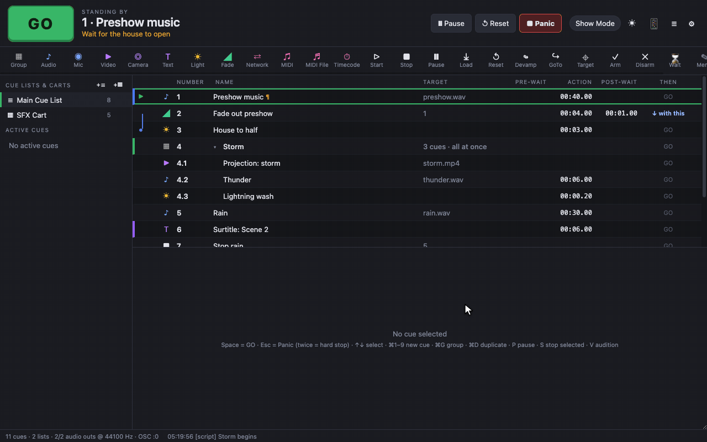
Setting up a stage
- Open Settings → Video Stages. Every workspace starts with one stage, Main Stage.
- Choose the Display it should appear on. With a projector connected, pick the projector.
- Tick Fullscreen on display to fill that screen without window borders. Otherwise set the window width and height.
- Click Open / update to show it. Identify flashes the stage's name on its screen so you can tell outputs apart.
- Click + Add stage for more outputs. Then choose the stage in each cue's Geometry tab.
Window → Open All Stages opens every stage at once. Stages also open automatically when a cue plays on them.
Stage options
| Option | Meaning |
|---|---|
| Name | Shown in cue Geometry tabs and by Identify. |
| Display | Which screen the stage opens on. |
| Window W / H | Size when not fullscreen. |
| Fullscreen on display | Fill the chosen screen. |
| Background | Colour shown when nothing is playing (normally black). |
| Edge blend left / right | Soft-edge width in pixels, for blending two overlapping projectors into one wide picture. |
| Corner-pin warp / keystone | Tick to move each corner of the picture. This corrects a projector that's off-centre or at an angle, or maps the picture onto a flat surface. Corners use 0–1 coordinates: top-left is 0,0 and bottom-right is 1,1. |
Lighting
NomadCue controls DMX lights over the network using Art-Net or sACN (E1.31), with unlimited universes. Write looks as simple text commands, or build them on the dashboard.
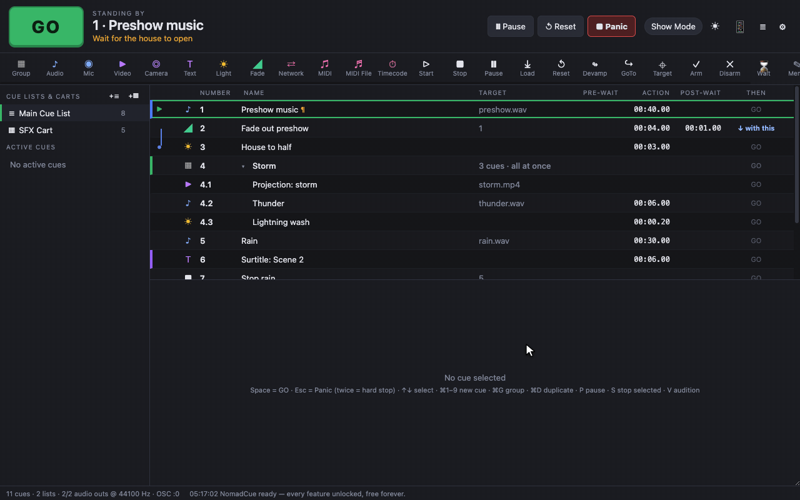
1. Connect to your lights
You need an Art-Net or sACN node (or a console or fixtures that accept them) on the same network as the computer. In Settings → Lighting:
| Setting | Meaning |
|---|---|
| Protocol | Art-Net or sACN (E1.31). |
| Destination IP | Art-Net: 255.255.255.255 (broadcast, the default) or your node's IP. sACN: leave blank or use the broadcast address for multicast. |
| Universe offset | Added to every universe number, if your node counts from 0 or from a different universe. |
| Refresh (Hz) | How often DMX is sent. 40 is standard. |
| Output DMX | Turns network output on or off. Turn it off to programme without sending to the rig. |
2. Patch your instruments
Still in Settings → Lighting, add one row per light: number, name, type, universe and address. The channels column shows which DMX channels it uses. + 12 dimmers adds a block of dimmers at once.
| Type | Parameters (consecutive channels) |
|---|---|
| Dimmer | intensity |
| RGB | red, green, blue |
| RGBW | red, green, blue, white |
| Intensity + RGB | intensity, red, green, blue |
| Intensity + RGBW | intensity, red, green, blue, white |
| RGBWA | red, green, blue, white, amber |
| Moving head (basic) | pan, tilt, intensity, red, green, blue |
Groups (below the patch) give a name to several instruments. Enter the group name and its members as instrument numbers separated by spaces (1 2 3). Then frontwash = 60 sets them all.
3. The command language
One command per line. Values are percentages from 0 to 100.
front = 75 # an instrument or group, by name
1 = 50 # by number
1 thru 6 = full # ranges ("thru", "through" or "-"); full = 100
1 + 3 + 5 = 40 # lists
wash.red = 100 # one parameter
wash.color = #ff8800 # a colour, for RGB(W) instruments
back = half # half = 50
all = out # every instrument; out (or off) = 0A bare value on an RGB instrument without an intensity channel dims all its colours together, so it behaves like a dimmer.
4. Light cues
- Add a Light cue (⌘6) and open its Levels tab.
- Type commands in Commands. The line below shows what they resolve to, or an error if a name isn't patched.
- Set the Fade time and Curve.
- Preview (snap) sends the look to the rig instantly so you can check it.
Light cues only change what they mention. Anything else stays where it was, so cues can build on each other. End a scene with all = out for a blackout.
5. The Light Dashboard
Open it with ☀ in the top bar or ⌘⇧L. It shows a fader for every parameter of every instrument, live.
- Drag faders, or type a command in the command line and press Enter.
- Blackout sets everything to 0 instantly, and Fade out 3s fades it.
- Copy look copies the current levels as commands you can paste into a cue.
- In a Light cue, Record current dashboard look replaces the cue's commands with what's on the dashboard. Build the look by eye, then record it in one click.
nq.light('front = 40', 3) fades front to 40% over 3 seconds. See Script cues.OSC and UDP
Other software and hardware (lighting consoles, show controllers, phones, programming tools) can control NomadCue over the network, and Network cues can control them.
Receiving: controlling NomadCue
Turn on Accept OSC & UDP control in Settings → OSC / Network.
| Port | Default | Use |
|---|---|---|
| OSC port (UDP) | 53000 | Send OSC messages here. |
| Reply port | 53001 | Replies to queries such as /cueLists are sent back to the sender on this port. |
| Plain-text UDP port | 53535 | Send plain text lines such as /go. Useful for devices that can't send real OSC. |
Commands
/go GO
/go/{number} GO from cue {number}
/stop /hardStop /panic /panicInTime {seconds}
/pause /resume /reset
/playhead/next /playhead/previous /playhead/{number}
/select/{number}
/cue/{number}/start | stop | pause | resume | togglePause | load | arm | disarm
/cue/{number}/name [new name] read or set a cue's name
/cue/selected/start /cue/playhead/start
/cueLists /runningCues /version queries (reply on the reply port)
/connect {passcode}Any command can be prefixed with /workspace/{name}.
Passcode
Set a Passcode to stop other devices on the network controlling the show. Clients must send /connect {passcode} first.
Sending: Network cues
A Network cue sends one or more messages when it runs. In its Network tab:
| Field | Meaning |
|---|---|
| Protocol | OSC (UDP) or Plain UDP text. |
| Host / Port | The receiving device's IP address and port. |
| Message(s) | One message per line. OSC format: /address arg1 2 3.5 "quoted string". Numbers are sent as numbers, and text in quotes as a string. |
/eos/cue/1/12/fire
/scene/recall 4
/text "Welcome to the show"Use 255.255.255.255 as the host to broadcast to every device on the network.
MIDI, MSC and timecode
Trigger cues from keyboards, pads and consoles, send MIDI to other gear, and sync with MIDI Show Control and MIDI timecode.
Setup
In Settings → MIDI:
| Setting | Meaning |
|---|---|
| MIDI input | A specific device or All inputs. |
| Default MIDI output | Used by MIDI, MIDI File and Timecode cues that don't name their own output. |
| GO on note number | A note that acts as GO, for example a foot pedal or pad. |
| Panic on note number | A note that acts as Panic. |
| MSC device ID | NomadCue's MIDI Show Control device ID. |
| Respond to MIDI Show Control | Accept MSC commands from a console (see below). |
MIDI Show Control commands NomadCue responds to
| MSC command | NomadCue does |
|---|---|
| GO | GO, or with a cue number, GO from that cue. |
| FIRE | GO from the given cue number. |
| STOP | With a cue number, stops that cue. Without, pauses everything. |
| RESUME | Resumes everything. |
| ALL_OFF | Hard stop. |
| RESET | Stops everything and returns the playhead to the top. |
Commands are accepted when sent to device ID 127 (all) or to NomadCue's MSC device ID.
Triggering a cue from MIDI
- Select the cue and open its Triggers tab.
- Under MIDI trigger, click MIDI Learn and play the note, move the controller or send the program change. Or set the type (note, control change or program change), channel (0 = any) and number by hand.
- That message now fires the cue. It works for cues on carts too, making a MIDI pad controller into a sound board.
MIDI cues
Send one message per cue. Choose the output and the message type:
| Message | Fields |
|---|---|
| Note On / Note Off | Channel (1–16), note, velocity. |
| Control Change | Channel, controller, value. |
| Program Change | Channel, program. Recalls a scene or preset on a mixer. |
| Pitch Bend | Channel, value (0–16383). |
| MIDI Show Control | Device ID (127 = all), command format (Lighting, Sound, Machinery, Video, All types), command (go, stop, resume, timed_go, load, set, fire, all_off, restore, reset, go_off), cue number and list. |
| SysEx (hex) | Raw bytes, such as F0 7E 7F 06 01 F7. |
MIDI File cues
Play a standard MIDI file (.mid) to an output, at an adjustable Rate. Drop the file onto the window to create one.
Timecode cues
Send MIDI timecode (MTC) so other equipment (a lighting console, video server or DAW) follows along. Set the output, Frame rate, Start timecode (HH:MM:SS:FF) and Duration. Link it to your audio with Start next with this so both start on the same GO.
Script cues
When the built-in cues aren't enough, a Script cue runs JavaScript with a small API for controlling the show.
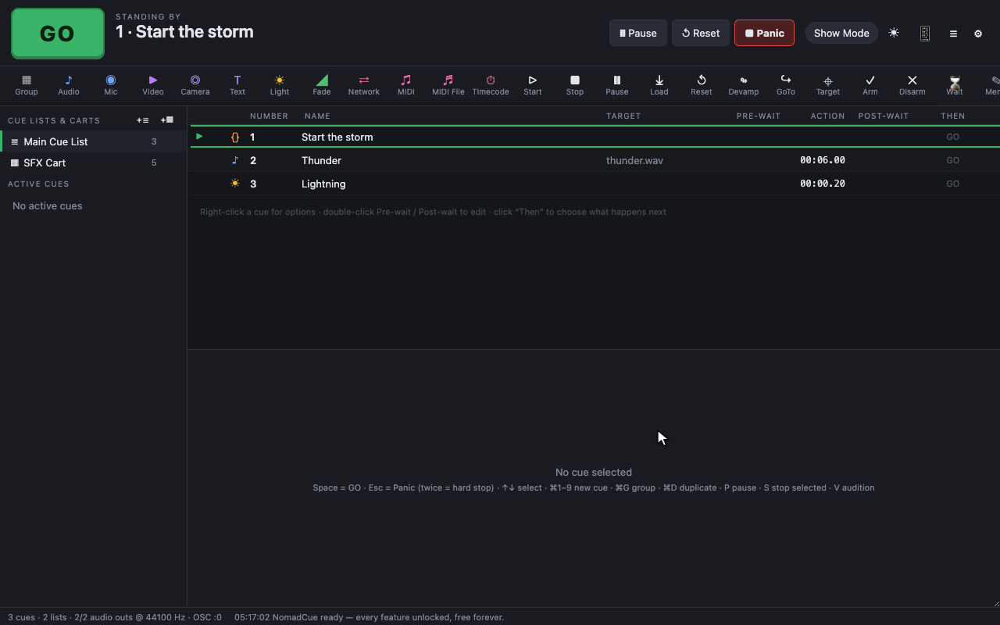
Writing a script
Add a Script cue (toolbar → Script), open its Script tab and type your code. You can use await directly. The cue counts as running until the script finishes.
nq.log('Starting act 2');
nq.start('12'); // fire cue 12
await nq.wait(2.5); // wait 2.5 seconds
nq.osc('192.168.1.20', 8000, '/eos/cue/1/5/fire');
nq.light('front = 40', 3); // 3-second lighting fade
if (!nq.isRunning('1')) nq.go();The nq API
| Call | What it does |
|---|---|
| nq.go() | Presses GO. |
| nq.start(n) | Starts cue number n (a string, like '4.1'). Returns false if there's no such cue. |
| nq.stop(n, fade) | Stops cue n, with an optional fade in seconds. |
| nq.pause(n) / nq.resume(n) | Pauses or resumes cue n. |
| nq.panic() | Fades everything out over 1 second. |
| nq.stopAll() | Stops everything instantly. |
| nq.playhead(n) | Moves the playhead to cue n. |
| nq.cue(n) | Returns cue n's data (name, file, levels…). |
| nq.set(n, prop, value) | Changes a property of cue n, for example nq.set('3', 'level', -10). |
| nq.isRunning(n) | True if cue n is running. |
| nq.wait(seconds) | Use with await to pause the script. |
| nq.light(commands, seconds) | Fades lights using the command language. |
| nq.osc(host, port, message) | Sends an OSC message, in the same format as a Network cue. |
| nq.udp(host, port, text) | Sends plain UDP text. |
| nq.midi(bytes, outputId) | Sends raw MIDI bytes, such as [0x90, 60, 100]. |
| nq.log(...) | Writes to the log (≡ in the top bar). |
| nq.workspace() | Returns the whole workspace. |
The cue itself is available as cue. Errors are written to the log with the cue number, and the show carries on.
Workspace settings
Open settings with ⚙ in the top bar or ⌘,. Settings are saved inside the workspace, so they travel with the show.
| Tab | What's there |
|---|---|
| General | Panic fade time (1 s), autosave backup interval (2 min, 0 = off), keep timestamped backups on every save, double-GO protection (0.2 s), Show Mode. |
| Audio | Output device, number of output channels, and a name, level and mute for each output. |
| Video Stages | Your output windows: display, size, fullscreen, background, edge blending and corner-pin warp. See Stages. |
| Lighting | Art-Net or sACN, destination IP, universe offset, refresh rate, Output DMX, the patch and groups. See Lighting. |
| OSC / Network | Accept OSC & UDP, OSC port, reply port, plain-text UDP port, passcode, and the list of supported commands. See OSC. |
| MIDI | Input, default output, GO and Panic notes, MSC device ID and MSC receive. See MIDI. |
| Remote | Enable the web remote, port, passcode, and the addresses to open. See Phone remote. |
Saving, backups and moving shows
A workspace is one .nomadcue file holding your cue lists, carts and settings. Media files stay where they are and are referenced by path.
The File menu
| Command | Shortcut | What it does |
|---|---|---|
| New Workspace | ⌘N | Starts an empty workspace. |
| Open… | ⌘O | Opens a .nomadcue file. You can also double-click one, or drop it onto the window. |
| Save / Save As… | ⌘S / ⌘⇧S | Saves the workspace. |
| Bundle Workspace (copy media)… | Copies every media file into a media folder next to the workspace. See below. | |
| Workspace Settings… | ⌘, | Opens settings. |
Backups
- Each save also writes a copy named
Show 2026-10-25T19-30-00.nomadcueinto a NomadCue Backups folder beside the workspace. The newest 20 are kept. - Once the workspace has been saved, unsaved changes are also backed up every few minutes (2 by default).
- To go back to an earlier version, open a backup with File → Open, then Save As to give it a new name.
Moving a show to another computer
- Choose File → Bundle Workspace (copy media)… and pick a folder.
- NomadCue copies every file the show uses into
media/inside that folder. Files with the same name are numbered so nothing gets overwritten. - Save the workspace into the same folder.
- Copy the whole folder to the other computer (USB stick, cloud drive…). Paths are saved relative to the workspace, so everything is found.
Keyboard shortcuts
On Windows and Linux, use Ctrl for ⌘ and Alt for ⌥.
Running the show
| Key | Action |
|---|---|
| Space | GO |
| Esc | Panic (fade out everything). Press twice for hard stop. In a text field, leaves the field. |
| ↑ / ↓ | Move the selection (and playhead). In Show Mode, move the playhead. |
| P | Pause or resume the selected cue |
| S | Stop the selected cue (not in Show Mode) |
| V | Audition (play) the selected cue (not in Show Mode) |
| Cue hotkeys | Any single key you assign in a cue's Triggers tab |
| ⌘⇧M | Toggle Show Mode |
Editing
| Key | Action |
|---|---|
| ⌘1 … ⌘9, ⌘0 | New Audio, Mic, Video, Camera, Text, Light, Fade, Network, MIDI cue; ⌘0 new Group |
| Enter | Rename the selected cue |
| Right-click | Cue menu |
| ⌘D | Duplicate |
| ⌘G | Group the selection |
| ⌘C / ⌘X / ⌘V | Copy, cut, paste cues |
| ⌥↑ / ⌥↓ | Move the cue up or down |
| ⌫ | Delete the selected cues |
| ⌘Z / ⌘⇧Z | Undo / redo |
| ⌘-click / ⇧-click | Add to the selection / select a range |
| Double-click | Edit a cue's number, name, pre-wait or post-wait in place |
Files and windows
| Key | Action |
|---|---|
| ⌘N / ⌘O | New / open workspace |
| ⌘S / ⌘⇧S | Save / save as |
| ⌘, | Workspace settings |
| ⌘⇧L | Light Dashboard |
Troubleshooting
Common problems and how to fix them. If you're still stuck, open an issue on GitHub.
Installing
macOS says the app "can't be opened" or is from an unidentified developer
NomadCue isn't code-signed yet. Right-click the app in Applications, choose Open, then Open again. You only need to do this once. If there's no Open button, go to System Settings → Privacy & Security and click Open Anyway.
Windows SmartScreen blocks the installer
Click More info, then Run anyway.
The Linux AppImage doesn't start
Make it executable: chmod +x NomadCue-*.AppImage. Some distributions also need libfuse2 installed.
Running
Space doesn't GO
You're probably typing in a text field. Press Esc to leave the field, then Space. Also check that GO isn't greyed out (end of the list), and that the cue isn't disarmed.
GO skipped a cue
The cue was probably linked to the one before it, so it started automatically. Check the Then column. Disarmed cues are also skipped.
A cue shows ⚠ in the Then column
It's set to Start next when done but never ends on its own. See Transitions.
Sound
No sound
- Check Settings → Audio: the right output device, and outputs not muted.
- Check the cue's level (Levels tab) and that it's armed.
- Watch the meters in the status bar. If they move, the problem is after NomadCue (interface, cables, amp).
A cue is red with ⚠
Its file has moved or been renamed. Choose it again in the Inspector, and use Bundle Workspace to keep media with the show.
Video
Nothing appears on the projector
- Settings → Video Stages: pick the projector as the stage's display, then Open / update.
- Click Identify to see which screen each stage is on.
- Check the cue's Stage, Opacity and Layer in its Geometry tab.
Lighting
Lights don't respond
- Tick Output DMX in Settings → Lighting.
- The computer and your Art-Net/sACN node must be on the same network and subnet.
- Check the protocol, destination IP and universe (try a universe offset of 1 or -1 if your node counts differently).
- Open the Light Dashboard and move a fader. If the patch is wrong, the right fader won't move the right light.
Control
OSC or UDP messages aren't received
- Tick Accept OSC & UDP control, and check the port.
- Allow NomadCue through the computer's firewall.
- If a passcode is set, the sender must send
/connect {passcode}first. - Open the log (≡) to see what's arriving.
The phone remote won't load
Use the address shown in Settings → Remote (not localhost), make sure the phone is on the same Wi-Fi, and allow NomadCue through the firewall.
No MIDI devices are listed
Connect the device before opening NomadCue, or reopen the settings. On macOS, enable the IAC Driver in Audio MIDI Setup for virtual ports.